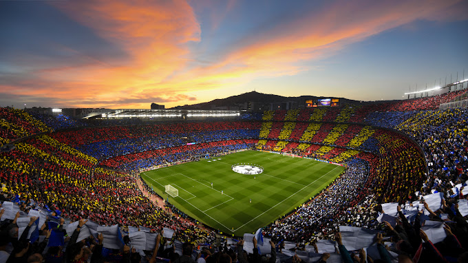
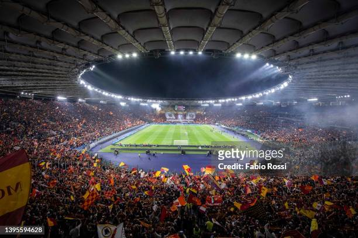
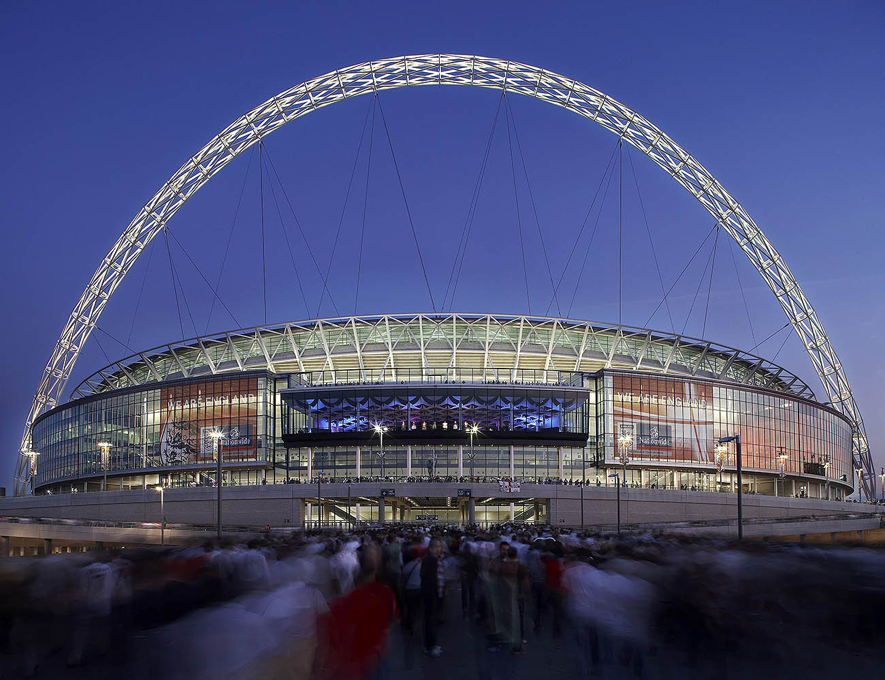

Alapszabályok
A játékot 2×45 percig játsszák, ezeket nevezik félidőknek. A nem játékkal töltött időt (például sérülés, csere) a bírók a félidők végén hosszabbítás formájában beszámítják.
A játék célja a gól, vagyis a labdának az ellenfél kapujába való juttatása. A gól akkor szabályos, ha a labda teljes terjedelmével átjutott a gólvonalon. Az a csapat nyeri a mérkőzést, aki a játékidő alatt több gólt ér el. Ha a két csapat góljainak száma megegyezik akkor a meccs döntetlen.
Mindkét csapatban 11 játékos van egy időben a pályán (amennyiben nincs kiállítás), de lehetőség van a cserére. Hivatalos mérkőzéseken ötöt lehet cserélni, három játékmegszakítás alkalmával, amibe nem kell beleszámolni a félidőt. Hosszabbítás esetén újabb egy cserelehetőség van. Barátságos meccseken a két csapat a játékvezetővel egyetértésben megegyezhet a cserelehetőségek számában. Az a játékos, akit edzője lecserélt, már nem térhet vissza a pályára az adott meccsen (kivétel az edzőmérkőzés). A cserének ott kell elhagynia a pályát ami hozzá a legközelebb van.
Labdarúgó-világbajnokság
Az első világbajnokságot 1930-ban rendezték Uruguayban, melynek döntőjét Uruguay és Argentína (4–2) játszotta. Sok ország – Európából a nagy távolság és a jelentős költségek miatt csak négy csapat képviselte a labdarúgást – nem vett részt a tornán, így a legtöbb résztvevő az amerikai földrészről érkezett. 1934-től az európai csapatok is érdeklődni kezdtek a rendezvény iránt, ezért a tornát követően a verseny egyre jobban kiteljesedve a világ legnagyobb labdarúgó eseményévé vált. Ettől kezdve egyéb bajnokságok is kialakultak – az Európa-bajnokság, a Dél-amerikai Copa América, az óceániai OFC-nemzetek kupája, az Ázsia-kupa, az afrikai nemzetek kupája és az Észak-amerikai CONCACAF-aranykupa, melyek mind a kontinensük legfőbb labdarúgó rendezvénye. A brazil csapat – amely „Seleção”-ként is ismert – rendelkezik a legtöbb világbajnoki címmel, öt alkalommal volt győztes.
| Camp Nou | |
|---|---|
A Spotify Camp Nou, korábban Camp Nou, gyakran Nou Camp az FC Barcelona labdarúgócsapatának otthona Barcelonában, Katalóniában. A stadion 1957-ben készült el, az akkorra kicsinek bizonyuló Les Corts helyett, és Európa legtöbb néző befogadására alkalmas labdarúgó arénája lett. |
 |
| Stadio Olimpico | |
|---|---|
A Római Olimpiai Stadion az egyik legnagyobb múltú olaszországi sportlétesítmény. Az 1932-ben átadott stadion napjainkban Róma város két rivális csapatának, a Laziónak és az AS Romának a közös otthona. |
 |
| Wembley | |
|---|---|
A Wembley Stadion egy labdarúgó-stadion Wembley-ben, Londonban. 2007-ben nyílt meg a korábbi Wembley Stadion helyén, melyet 2002–2003-ban bontottak le. A stadion nevezetes labdarúgó-mérkőzéseknek ad otthont, többek között itt játssza találkozóit az angol válogatott, és itt rendezik az FA-kupa döntőjét |
 |